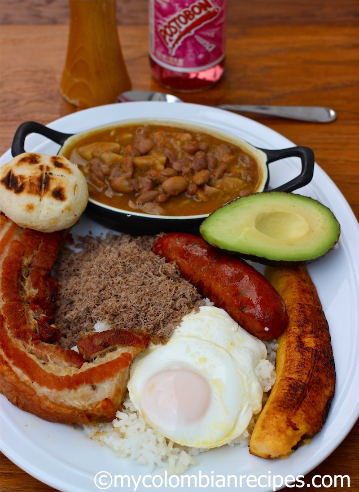

Bandeja Paisa

Description
It is probably the most popular Colombian dish, originally from the Andean region of the country where the people are called “Paisas” and the area where I was born and raised.
The Bandeja Paisa includes Colombian style beans, white rice, chicharrón, powdered beef, chorizo, fried egg, ripe plantain, avocado and arepa, but you can substitute the powdered beef for grilled beef.
Ingredients
- Colombian Style Beans
- White Rice
- Chicharrón
- Powdered Beef
- Chorizo
- Eggs
- Ripe Plantain
- Avocado
- Arepa
Steps
- Prepare the beans, hogao and powdered beef one day ahead and keep in the refrigerator
- When you are going to serve the bandeja paisa, heat the beans and powdered beef and hogao. Make the chicharrones
- Cook the white rice and plantains
- Fry the eggs and chorizos
- To serve, place the rice in a tray or platter and place the rest of the ingredients as you like. I prefer the beans in a separate bowl, but you can ladle the beans next to the rice if you like
- Bring the hogao in a serving dish to the table, so people can place it on top of the beans if they like